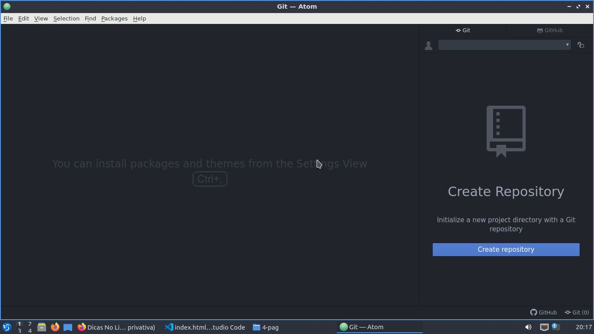
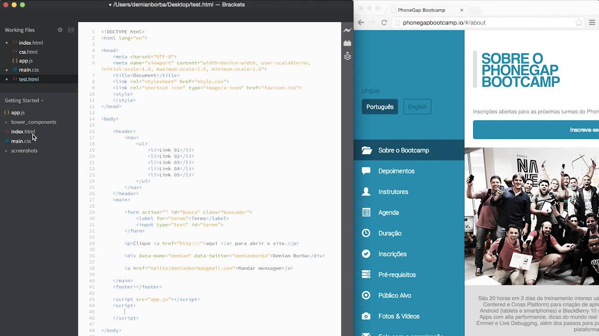
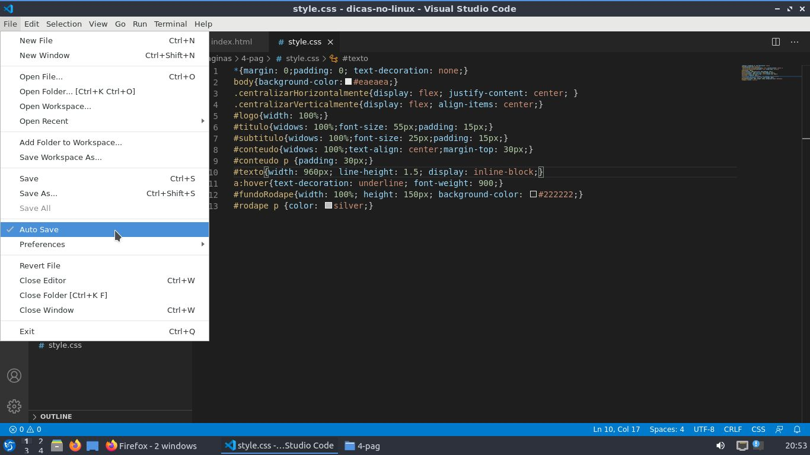

EDITOR ATOM
É um editor extremamente moldável, fácil de usar,
e que possui total e o mais completo vinculo com o github.
Por possuir um estrutura cujo o codenome é de Editor Hackeavél, ele nos permite
modificar tudo nele por códigos digitados nele mesmo.

EDITOR BRACKETS
Esse editor é demais de overpower, ele também possui uma conectividade simples com o github,
mas o que torna esse editor extremamente overpower é que ele é o único que possui uma função que por enquanto
só funciona no navegador Google Chrome, essa função nos permite criar nossos sites e ver os resultados em tempo real.
Um exemplo prático disso, é quando a gente tá no css, a gente não precisa mais apertar a tecla F5, para ver os resultados.

EDITOR VISUAL STUDIO CODE
Esse editor é de longe o melhor de todos porque ele possui as ferramentas de debug mais completas
do mercado, e só o fato de ser o único a possuir a função de auto-save, que nos ajuda bastante, pois não
precisamos mais ficar apertando ctrl + S o tempo todo para salvar a nossa aplicação. Essa função do
auto-save é de grande ajuda, e por isso pra mim esse editor é o melhor de todos.

LINK PARA DOWNLOAD DOS 3 EDITORES LOGO ABAIXO:
ATOM: https://atom.io
BRACKETS: http://brackets.io
VSCODE: https://code.visualstudio.com